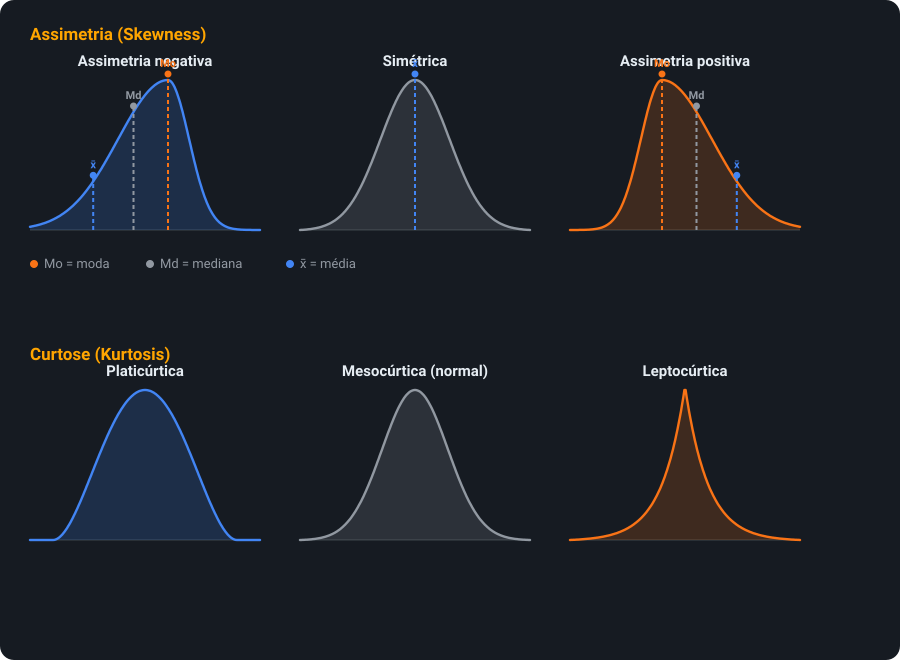
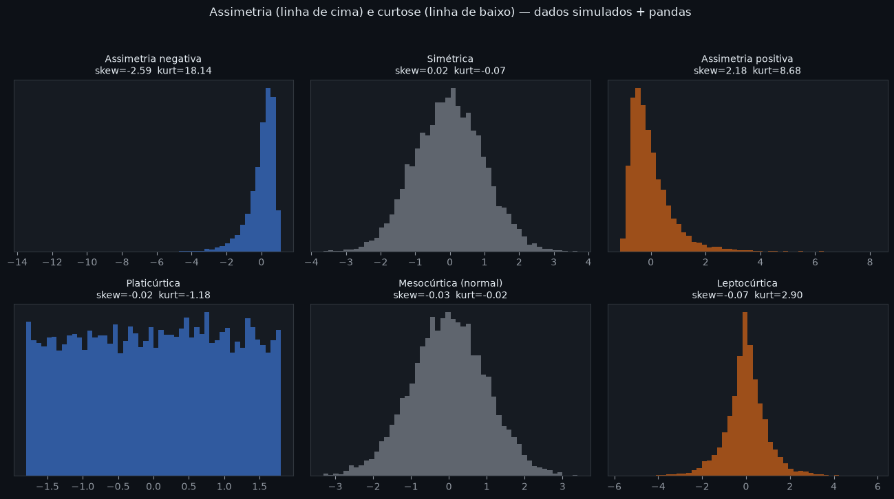
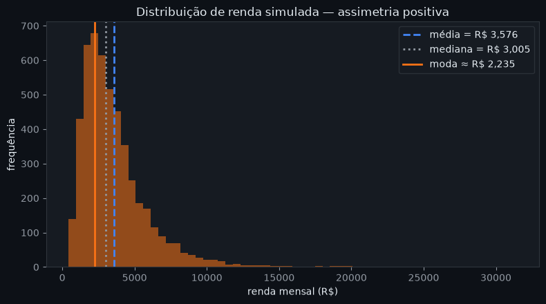
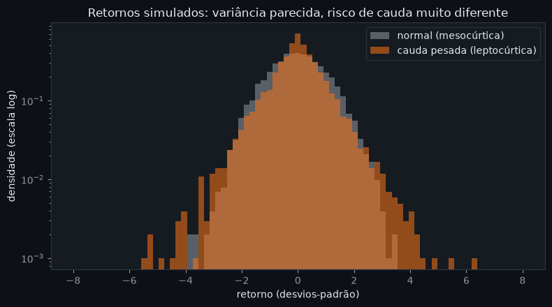
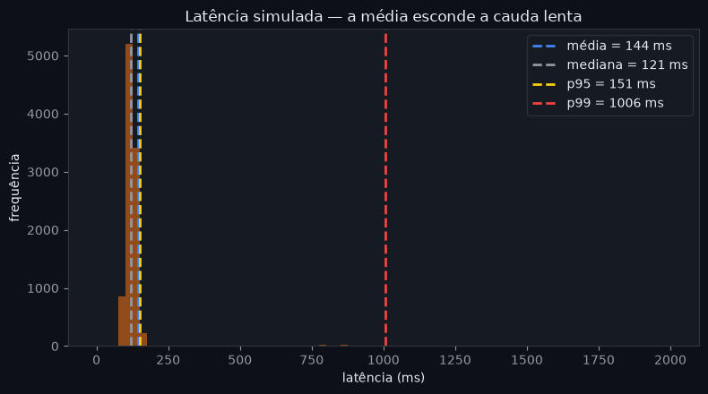

👨🏻💻 Autor deste Repositório
🏫 Instituição: Cesar School 🎓🧡
📍 Recife, Pernambuco — Brazil 🇧🇷
🏛️ Arquitetura desta Atividade
atividade 2 - Estátistica/ ├── img/│ ├── assimetria_curtose.png │ ├── distribuicoes.svg │ ├── imagem1.png

│ ├── imagem2.png
│ └── ASSIMETRIA_CURTOSE.md │ ├── pages/
│ └── index.html │ └── styles/
└── styles.css
📋 Sumário da Pesquisa
| Bloco | Pergunta | Status |
|---|---|---|
| 1a | O que é assimetria? | ✅ |
| 1b | O que é curtose? | ✅ |
| 2a | Assimetria positiva vs. negativa? | ✅ |
| 2b | Lepto, meso e platicúrtica? | ✅ |
| 3 | Pra que serve na prática? | ✅ |
| 4a | Exemplo de mercado — renda | ✅ |
| 4b | Exemplo de mercado — ativos financeiros | ✅ |
| 4c | Bônus — latência e seguros | ✅ |
| 5 | Ligação com média, mediana e moda | ✅ |
| 6 | Onde os LLMs divergiram | ✅ |
📝 Prompt utilizado
Enviei a mesma pergunta para os dois LLMs, sem mostrar a resposta de um para o outro:
"Explique com suas próprias palavras o que são assimetria e curtose em estatística, como se interpretam (assimetria positiva/negativa, distribuição leptocúrtica/mesocúrtica/platicúrtica), pra que servem na prática, onde aparecem no mercado, e como elas mudam a relação entre média, mediana e moda."
📈 Assimetria e curtose, visualmente
Assimetria é um conceito visual — o gráfico abaixo mostra as três formas de assimetria (com a posição de média, mediana e moda em cada uma) e as três classificações de curtose:

E abaixo, a mesma ideia com dados simulados de verdade — geração via numpy, manipulação com pandas (.skew() e .kurt()) e plot com matplotlib:

Os valores de skew/kurt impressos em cada painel confirmam a teoria: assimetria negativa dá skew < 0, positiva dá skew > 0, e a leptocúrtica tem kurt bem acima de 0, enquanto a platicúrtica fica negativa.
Bloco 1a — O que é assimetria?
Claude
Mede o quanto uma distribuição de dados é desequilibrada em torno da média — se a "cauda" se estica mais para um lado do que para o outro. Responde: os valores estão espalhados de forma equilibrada, ou algo puxa a distribuição para um lado?
Gemini
Descreve a falta de simetria de uma distribuição: mostra se os valores se concentram mais à esquerda (cauda longa à direita) ou mais à direita (cauda longa à esquerda) da média. Responde: a distribuição é simétrica, ou "puxada" para um lado?
🔎 As duas convergem: assimetria fala sobre equilíbrio/direção da distribuição.
Bloco 1b — O que é curtose?
Claude
Mede o quão "afunilada" é a distribuição perto do centro, e principalmente o quão pesadas são as caudas, comparado a uma normal. Responde: há muitos valores extremos (outliers), ou os dados estão mais espalhados/achatados?
Gemini
Descreve o formato do pico e das caudas em relação à normal: mais "pontuda" e propensa a outliers, ou mais achatada e com caudas leves. Responde: quão prováveis são os valores extremos, comparado ao que a normal previria?
🔎 Convergem: curtose fala sobre "peso" das caudas e altura do pico.
Bloco 2a — Assimetria positiva vs. negativa
| Tipo | Cauda longa | Ordem (média/mediana/moda) | Exemplo |
|---|---|---|---|
| Assimetria positiva | à direita | moda < mediana < média | renda, latência |
| Assimetria negativa | à esquerda | média < mediana < moda | idade de aposentadoria, nota de prova fácil |
Claude e Gemini concordaram nessa classificação — sem divergência aqui.
Bloco 2b — As três formas de curtose
| Tipo | Excesso de curtose (Fisher) | Curtose de Pearson | Formato |
|---|---|---|---|
| Leptocúrtica | > 0 | > 3 | pico alto, caudas pesadas |
| Mesocúrtica | ≈ 0 | ≈ 3 | igual à normal |
| Platicúrtica | < 0 | < 3 | achatada, caudas leves |
O Claude usou a convenção de Fisher (0), o Gemini usou a de Pearson (3) — ver Bloco 6.
Bloco 3 — Para que serve na prática?
| Situação | Decisão que muda |
|---|---|
| Dados assimétricos | usar mediana em vez de média como medida representativa |
| Distribuição leptocúrtica | medir risco por quantis (VaR/CVaR), não só desvio padrão |
| Curtose alta | reservar mais capital/margem para eventos extremos |
| Dados fora da normal | usar testes não paramétricos / simulações (Monte Carlo) |
| Precificação (seguros, opções) | considerar a chance real de eventos extremos, não só a média histórica |
Bloco 4a — Mercado: distribuição de renda
Fortemente assimétrica positiva: a maioria ganha valores relativamente baixos, e uma pequena minoria ganha muito mais, puxando a cauda (e a média) para a direita.

Renda simulada (log-normal) com numpy + pandas: note a ordem moda < mediana < média no histograma.
🔎 Por que a média falha: ela é "sequestrada" pelos altos salários — dizer "a renda média é R$X" passa a impressão de um padrão de vida mais alto do que o da maioria. A mediana representa melhor o que a pessoa "típica" ganha.
Bloco 4b — Mercado: retornos de ativos financeiros
Retornos diários de ações e índices costumam ser leptocúrticos ("fat tails"): quedas e altas bruscas acontecem com frequência maior do que uma normal preveria.

Mesma variância, risco de cauda muito diferente — em escala log fica visível quanto a distribuição leptocúrtica (laranja) tem mais massa longe do centro.
🔎 Por que a média falha: o desvio padrão, se usado como se os dados fossem normais, subestima a chance de eventos extremos — crashes, flash crashes — que são justamente os que mais importam para gestão de risco.
Bloco 4c — Bônus: latência e seguros
| Exemplo | Formato | Por que a média engana |
|---|---|---|
| Latência de sistemas | assimétrica positiva | cauda de requisições lentas some na média; por isso se usa p95/p99 |
| Sinistros de seguros | assimétrica + curtose alta | poucos eventos catastróficos ficam escondidos na média histórica |

A média (144ms) fica perto do caso comum, mas o p99 (1006ms) mostra que 1% das requisições demora vários segundos — por isso times de engenharia monitoram percentis, não a média.
Exemplos trazidos pelo Gemini — complementam os do Claude nos Blocos 4a/4b.
Bloco 5 — Ligação com média, mediana e moda
Numa distribuição simétrica e unimodal, as três coincidem. Conforme a assimetria aumenta, elas se separam — a mediana fica sempre no meio, e a média é a mais "puxada" para o lado da cauda longa.
| Assimetria | Ordem |
|---|---|
| Nenhuma (simétrica) | média = mediana = moda |
| Positiva (cauda à direita) | moda < mediana < média |
| Negativa (cauda à esquerda) | média < mediana < moda |
O Gemini acrescentou: a distância média − mediana pode ser usada como indicador informal de assimetria.
Bloco 6 — Onde os dois LLMs divergiram
| Aspecto | Claude | Gemini |
|---|---|---|
| Convenção de curtose | Excesso de Fisher — normal = 0 | Curtose de Pearson — normal = 3 |
| Leptocúrtica é... | > 0 | > 3 |
🔎 Nenhum dos dois estava errado — são duas convenções matemáticas para a mesma ideia:curtose de Fisher = curtose de Pearson − 3. Confirmei numa fonte adicional (material de estatística descritiva sobre medidas de forma) que a maioria das bibliotecas modernas (ex.:pandas.Series.kurt()) usa o excesso de Fisher por padrão, mas planilhas e alguns livros-texto ainda usam a curtose de Pearson.
🛠️ Ferramentas e fontes utilizadas
| Ferramenta | Papel |
|---|---|
| Claude | coluna "Claude" nos Blocos 1–5 e apoio na estruturação/redação da atividade |
| Gemini | coluna "Gemini" nos Blocos 1–5, gerada de forma independente (mesmo prompt) |
| pandas | manipulação dos dados simulados e cálculo de .mean(), .median(), .skew(), .kurt(), .quantile() |
| matplotlib | geração dos gráficos das seções 4a, 4b, 4c e do comparativo de 6 formas (imagem1.png a imagem4.png) |
| Fonte adicional | material de estatística descritiva sobre medidas de forma, usado para confirmar a divergência Fisher × Pearson no Bloco 6 |